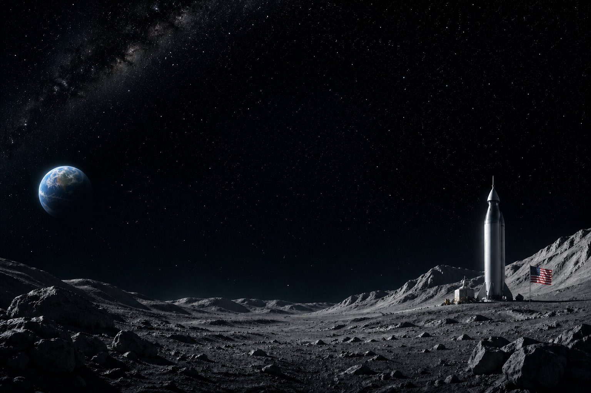
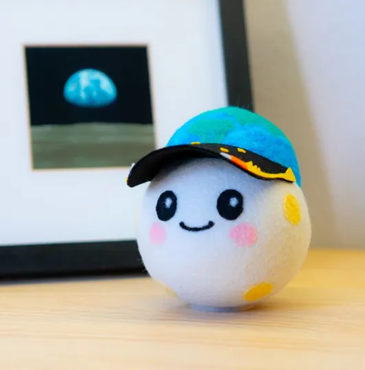

Maskotka Artemis
Oficjalną maskotką misji Artemis II jest pluszak o imieniu Rise.
Został on wybrany w drodze konkursu NASA „Moon Mascot”,
a jego projekt stworzył 8-letni Lucas Ye z Kalifornii.Służy jako wskaźnik mikrograwitacji
gdy maskotka zaczyna swobodnie unosić się w kapsule Orion
jest to sygnał dla załogi, że statek osiągnął przestrzeń kosmiczną
link do filmu o maskotce
filmik o maskotce
Obrazy
